Nuestros Perros para Adopción

 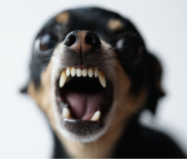
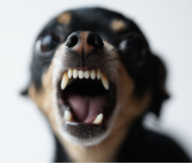

 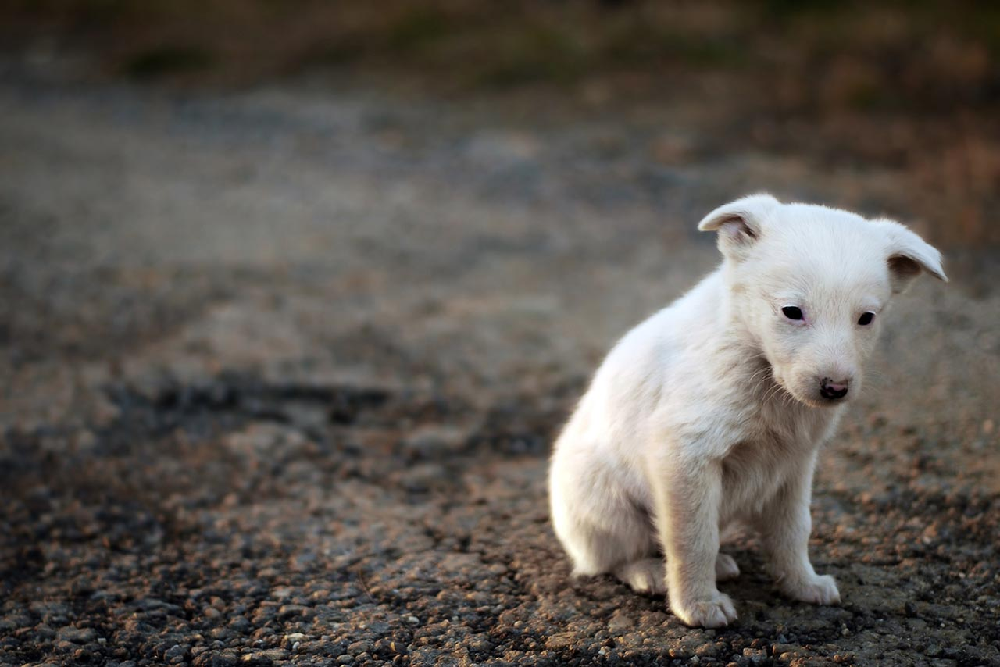
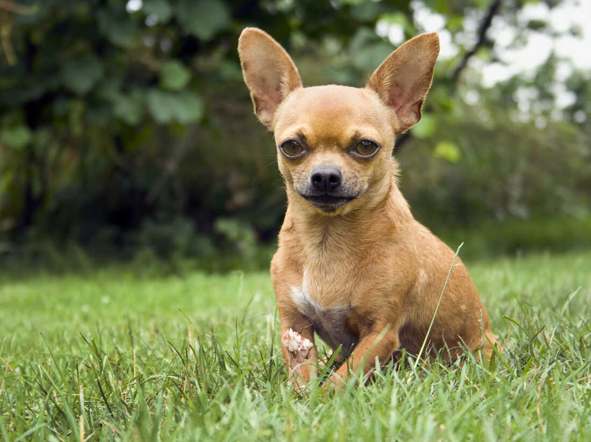
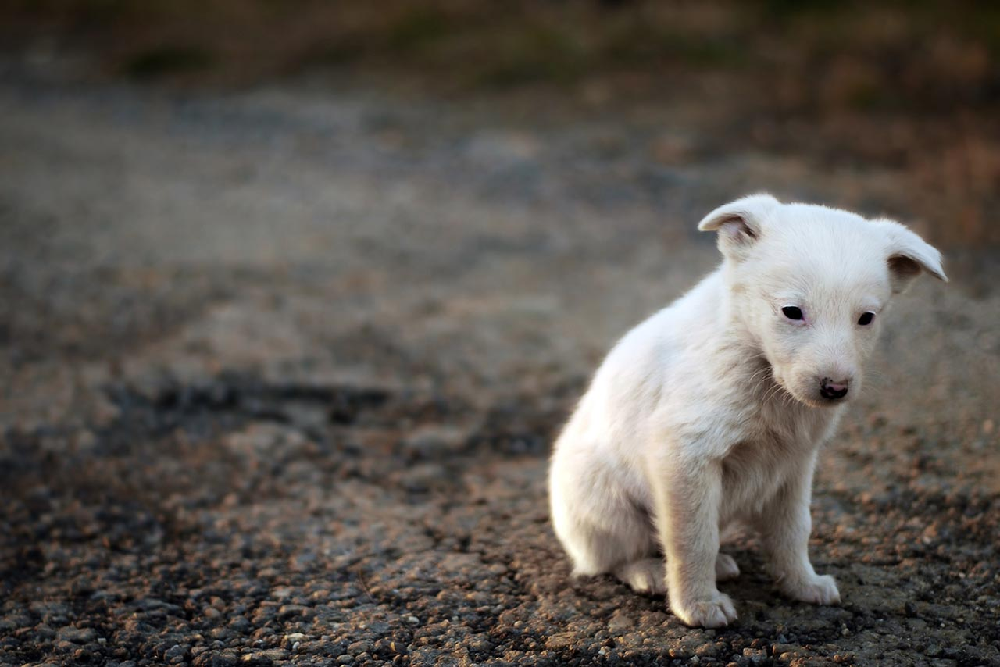
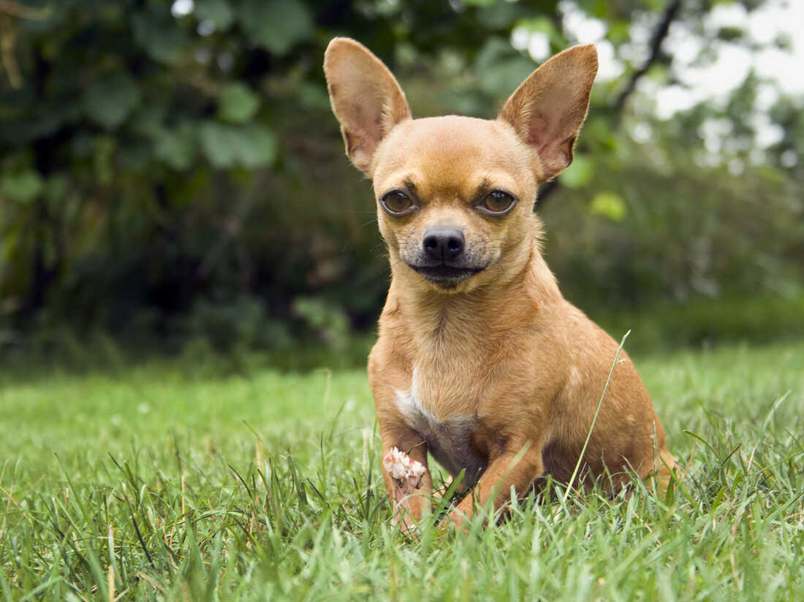
 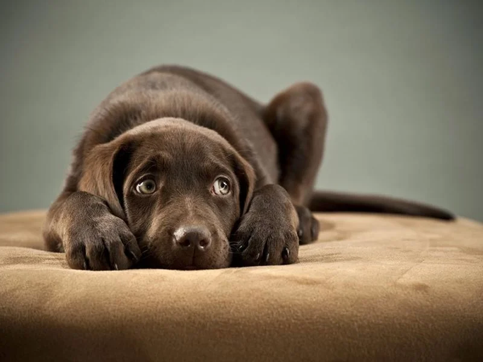
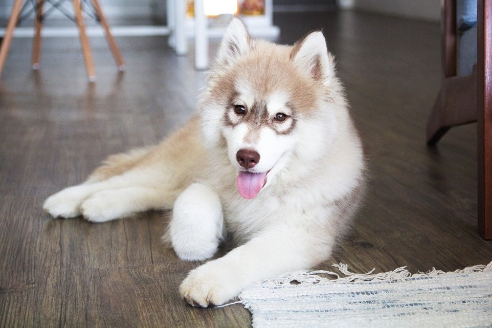
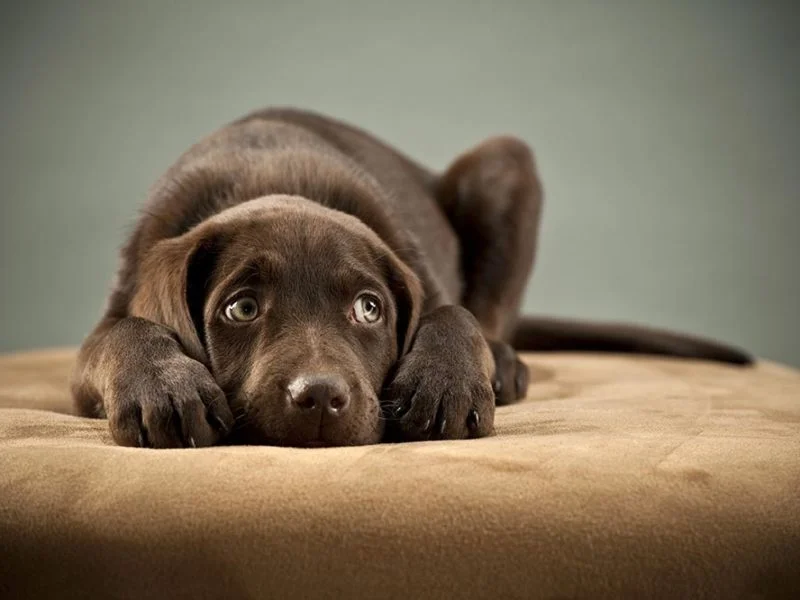
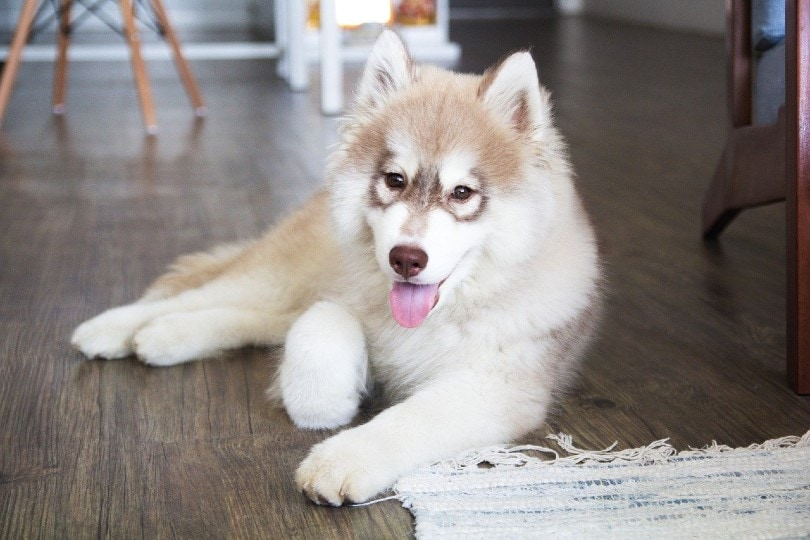


Estamos dedicados a cambiar vidas. Siempre hemos sido apasionados defensores de los perros sin un hogar y en busca de un nuevo comienzo.
Nuestra misión es rescatar, rehabilitar y reubicar a perros en busca de un nuevo comienzo.
Trabajamos con refugios locales y rescatistas comprometidos para brindarles una segunda oportunidad a esos amigos de cuatro patas que tanto lo necesitan.
No compres, adopta.
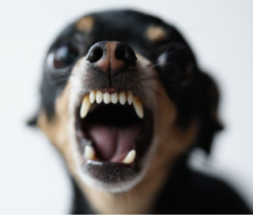
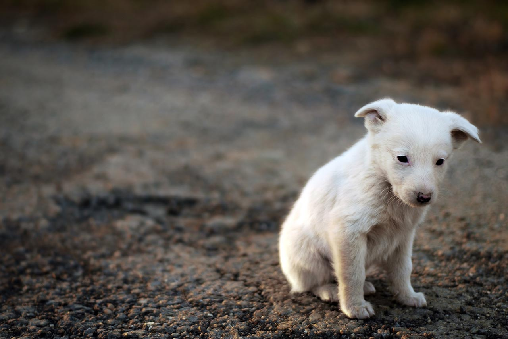
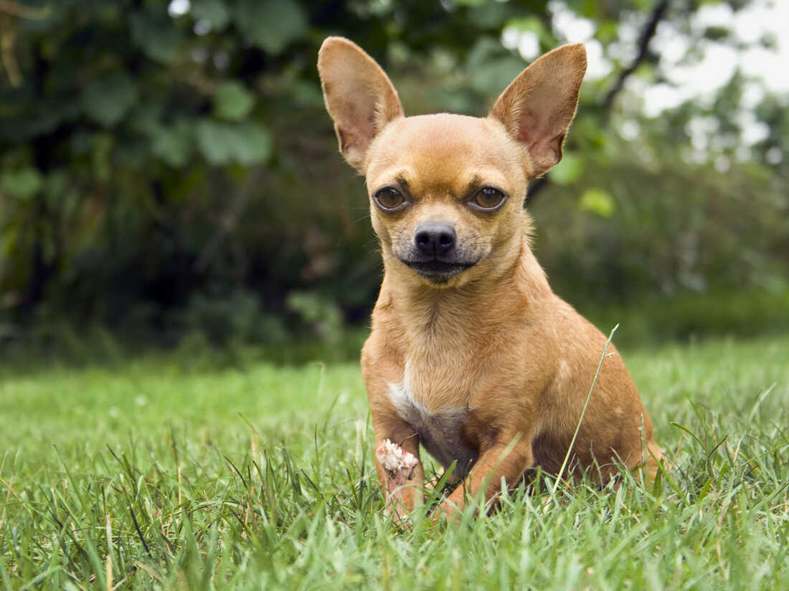
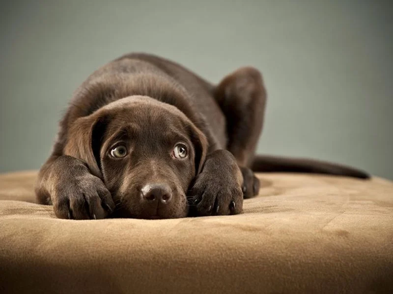
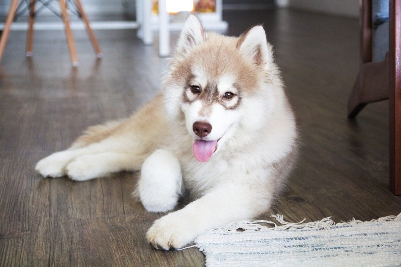
Creemos que cualquier tipo de ayuda es importante, no por lo que donan sino por la intención de ayudar y salvar vidas.
Max, un perro con discapacidad, fue rescatado de un criadero en condiciones terribles.
Había sufrido abuso y negligencia. A pesar de sus desafíos físicos, Max tenía un corazón valiente y lleno de amor.
Una familia con experiencia en cuidar perros con discapacidades lo adoptó y se comprometió a brindarle el cuidado y el amor que necesitaba.
Hoy en día, Max es un testimonio viviente de cómo el amor puede superar cualquier obstáculo.
Lola, una perrita "golden retriever" de tan solo 2 semanas, fue rescatada de las calles.
Es prácticamente una bebé que ha vivido en una situación complicada. Vivía sola por las calles alimentándose de sobras de comidas de los zafacones.
Actualmente se encuentra muy feliz y refugiada en nuestro centro y sueña con que algún día sea adoptada por una familia.
Toby, es un perro muy mayor y fue rescatado. Estaba siendo maltratado por sus ultimos dueños.
Toby desde muy bebé estuvo con la misma familia, pero recientemente tuvieron que abandonar el país y lo dejaron con los vecinos.
Él era muy feliz con su antigua familia, pero con la nueva no era igual, incluso llego al punto del maltrato.
Toby se encuentra en nuestro centro y sueña con volver a vivir con una familia feliz.